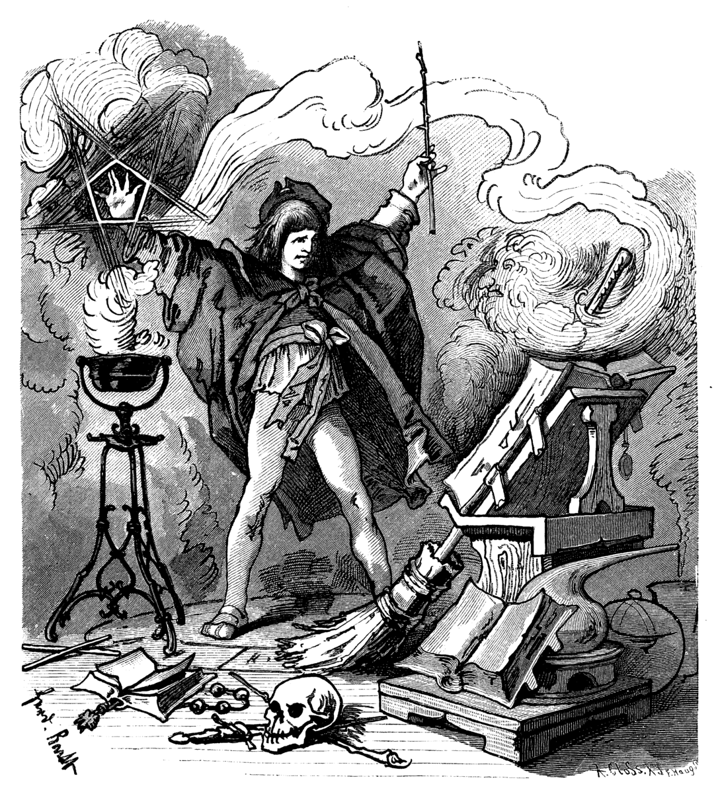

Sorcerer’s Apprentice Approach to Statistical Analysis
Numbers do not produce value. The widespread availability of muscular number-crunching computers has had the untoward effect of yielding power to the sorcerer’s apprentice. Statistics and computers must support the research activity, not motivate it (Alfred 1987, 3).
Alfred criticized neglecting the role of theory (which should guide any reseach inquiry) for the sake of “number-crunching.” This is a fair argument and repeated frequently by others. I would like to talk about a different (but related) issue using the metaphor, sorcerer’s apprentice. I am less concerned with the role of theory and its relation to method, but I am interested in how statistical methods are used in practice. But first, what does sorcerer’s apprentice mean?
It is the name of a poem by Goethe (Der Zauberlehrling 1). The story is about a sorcerer’s apprentice who is left alone to do some chores:
1 I think the German word captures the diminutive sense better.
Tired of fetching water by pail, the apprentice enchants a broom to do the work for him – using magic in which he is not yet fully trained. The floor is soon awash with water, and the apprentice realizes that he cannot stop the broom because he does not know how. The apprentice splits the broom in two with an axe – but each of the pieces becomes a whole new broom that takes up a pail and continues fetching water, now at twice the speed.
In the end, the master returns and saves the apprentice 2. The moral of the story: one should not dare to do things beyond his/her understanding. In our version, apprentice is an academic 3, and the broom is “statistics and computers.” Yet, I think computers (or rather the software we use for analysis) could become “broom” alone. And it might lead to a lack of understanding of statistics. In fact, this is different from neglecting the role of theory and might happen even if someone has a strong theoretical background and guidance.
2 You might not know that this is Goethe’s poem, but maybe the story sounds familiar. The reason is that you can find references to the Sorcerer’s Apprentice from the Communist Manifesto to Disney’s Fantasia (1940).
3 It might mean faculty member or graduate student. Honestly, I don’t think it matters a lot here.
There are various reasons why this could happen, especially in the social sciences 4. I would like to discuss three of them. The first and well-known reason (already stated by Alfred) is the availability of computers and increasing (computational) power of statistical software. Nowadays, we have easy access to the state-of-art programs which implement complex statistical techniques. The information on where to click or few lines of code are usually available online. The software returns an output and all you need to know is what those numbers in the output mean (I might be exaggerating). But the software availability alone is not enough and this takes us to the second (and more important) reason: the golems of the analysis.
4 I think social sciences are particularly susceptible, but this could be an overstatement.
In his book, McElreath (2015) begins the first chapter with the example of statistical golems which refer to the “tests” widely used in statistical analyses and taught in introductory courses. Those of us who took these courses are familiar with these golems, for example:
Whenever someone deploys even a simple statistical procedure, like a classical t-test, she is deploying a small golem that will obediently carry out an exact calculation, performing it the same way (nearly) every time, without complaint. (McElreath 2015, 2)
It is easy to find compilations of these golems, and guidelines on how to choose among them. A quick google search with “which statistical test to use” would return dozens of flowcharts (McElreath provided one in his book).
It is neither possible to deny the usefulness of these golems nor practical to get rid of them completely as they still might have some pedagogical value. But we need to keep in mind McElreath’s warning that “…there is no wisdom in the golem. It doesn’t discern when the context is inappropriate for its answers. It just knows its own procedure, nothing else” (McElreath 2015, 2). 5 So, it is not simply a matter of computational power and software implementation, but rather, how we use these two together. Unfortunately, the “know-how” about these golems might conceal the ignorance of the actual analytical techniques.
5 The issue is not limited to this test and similar others. For example, in the introductory courses, we learn four scales of measurement (Stevens 1946): nominal, ordinal, interval, and ratio. Now imagine we have a variable showing number of children in a household and response categories are “0, 1, 2, 3, 4, 5+”. How would you classify such a variable based on the four scales above? It is not nominal, not interval or ratio (e.g., 5+). One can say ordinal here, but we might lose information by treating it ordinal, especially for the first response categories. A better category would be (right-) censored count variable which can be analyzed (as an outcome) using a censored poisson regression model (Cameron and Trivedi 2005).
These arguments seem to imply that the burden is on the shoulders of the researcher. To a certain extent, this is true: the researcher should act responsibly, and explain the procedures and rationale behind them. This requires giving some thought to the tests instead of treating them as ready-made solutions (golems). But there is a third reason as to why this is not always possible. And it is time and resource constraints.
It is expected that a graduate student should master their substantive research area and the statistical methods they use (or in general, research methods). But is this really possible? If so, to what extent? If a student does not come to graduate school with a strong background in statistics, most graduate courses/seminars would not take far beyond an intermediate level. For basic applications, this could be enough. But in practice, we have to deal with intricate problems which require expertise.6
6 One can argue that that is why we have academic advisors. But again, unless their substantive area of research includes statistical methods, can we really trust them? Are they more careful in using these statistical golems? I would prefer to err on the side of caution. So, unlike the sorcerer’s apprentice, we might not have a master to save the day.
Usually, we need to prioritize what to study, especially under the pressure to finish projects and publish. Learning and mastering statistical methods can be time consuming and less rewarding. There is a trade-off and the decision is not that difficult: first and foremost, we are expected to contribute to our substantive area of research. There are lots of golems out there doing the job. And we saw others (senior academics?) using them without much hesitation. So lurks the danger of becoming a sorcerer’s apprentice.
Here is my two cents on how to avoid this approach as much as possible:
We might not be able to master statistical methods, their mathematical representation, or their software implementation, but it is possible to learn, at least in simpler terms, what is going on behind the curtain. For instance, there are many accessible discussions on the assumptions of statistical techniques and what could happen in case of violation.
Close attention to model specification would help as well. For example, one should be clear about the rationale of including some variables, while excluding others. It would be misleading to dump all variables, and then eliminating them one by one in an arbitrary fashion (e.g., p-value fishing). If we are not careful enough about the model specification, we will end up with “garbage in, garbage out” models.
After running the model, it is good to keep your guard up and remain suspicious about the results, instead of accepting them as presented in the computer output. It is possible that you missed some important issue at some point in the previous steps of the analysis. Making sensible changes (but not fishing for significant results or larger effect sizes), and testing for sensitivity would be helpful to improve the quality of the analysis.
Note: A friend commented that these arguments mostly apply to secondary data analysis. For example, in experimental research, there are other issues that require more attention (such as randomization, power, treatment, etc.), but they might not encounter the above mentioned problems to the same extent (e.g., variable selection, model specification). I agree with my friend, since I had secondary data analysis in my mind while writing this post. But I also think that the experimental researchers are no less susceptible to become a sorcerer’s apprentice. However, they might need to adopt different precautionary measures.
References
Alfred, Braxton M. 1987. Elements of Statistics for the Life and Social Sciences. London Paris Tokyo: Springer-Verlag.
Cameron, A. Colin, and Pravin K. Trivedi. 2005. Microeconometrics: Methods and Applications. Cambridge: Cambridge University Press.
McElreath, Richard. 2015. Statistical Rethinking: A Bayesian Course with Examples in R and Stan.
Stevens, S. S. 1946. “On the Theory of Scales of Measurement.” Science 103: 677–80.
Citation
BibTeX citation:
@online{2018,
author = {, T.E.G.},
title = {Sorcerer’s {Apprentice} {Approach} to {Statistical}
{Analysis}},
pages = {undefined},
date = {2018-12-07},
langid = {en}
}
For attribution, please cite this work as:
T.E.G. 2018. “Sorcerer’s Apprentice Approach to Statistical
Analysis.” December 7, 2018.